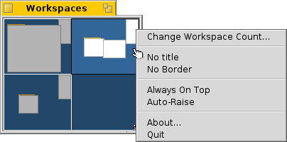

Workspaces
Workspaces are virtual desktops, complete with their own resolution, colour depth and background. Up to 32 of these workspaces can be set from the Screen preferences.
The Workspaces Applet

The Workspaces applet shows a miniature version of all workspaces. There are several options available from the context menu of the applet's window, which are all pretty self-explaining. Since the applet is a Replicant, you can resize the window as desired and then drag&drop it by its handle onto the desktop (make sure "Show Replicants" is activated in the Deskbar menu).
Switching workspaces
You can switch between workspaces by either clicking into the Workspaces applet or by using the keyboard shortcut ALT+Fx, where "x" is the workspace number. Also, clicking on an application or one of its windows in the Deskbar will send you to the workspace it resides in.
Moving windows between workspaces
To move a window, you grab it in the Workspaces applet and simply drag it to another workspace. This has the advantage, that you can move it without leaving your current desktop. Of course, that only works well when there aren't too many windows on a workspace and your target isn't obscured by other windows. Another possibility is to grab a window by its tab and just holding on to it while switching workspaces with ALT+Fx.